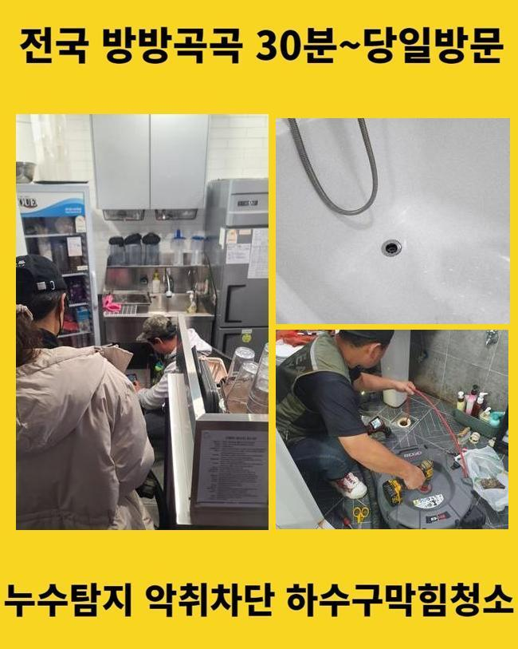
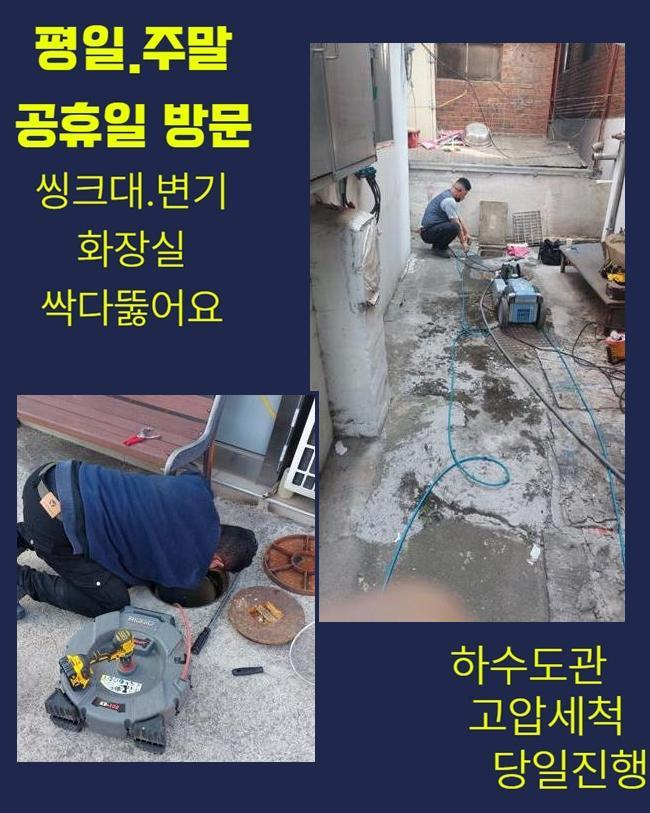
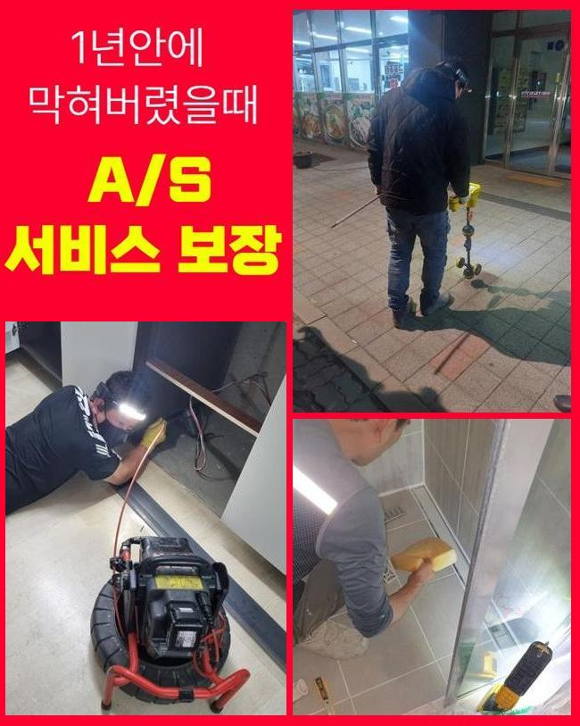
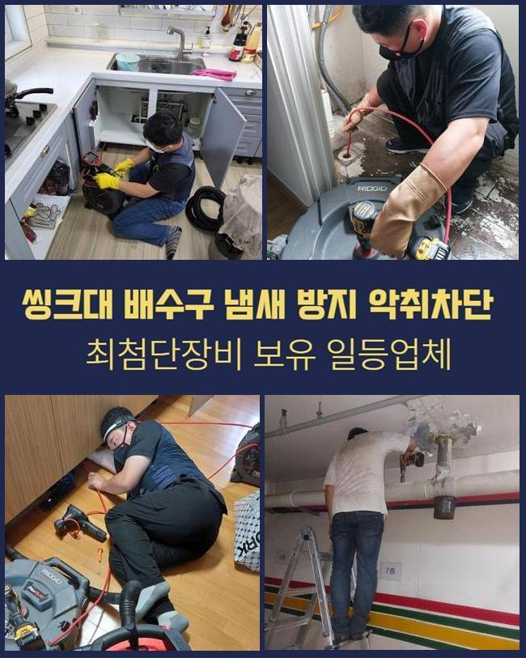
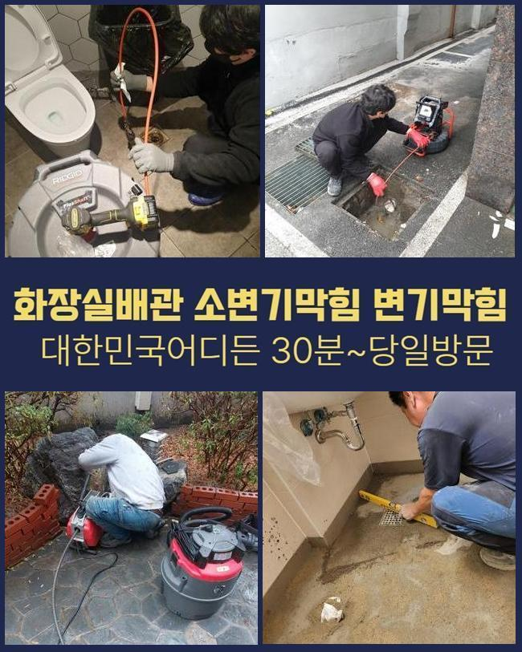
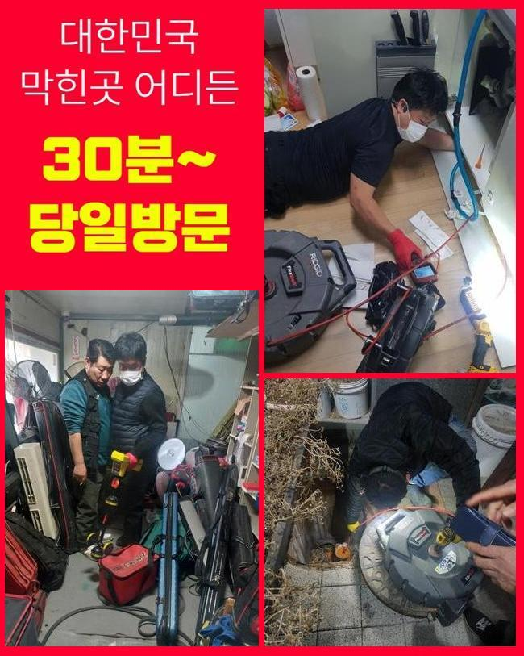

🏠 광주 경안동싱크대배수구막힘 오포읍 맨홀역류 출장설비
광주 오포읍 싱크대막힘 전문 시공 후기

📋 작업 개요
- 위치: 광주 오포읍, 오포읍, 광주
- 서비스 유형: 싱크대막힘, 하수구막힘, 배관막힘, 맨홀막힘, 집수정막힘, 누수수리, 역류해결, 배관청소, 고압세척
- 작업 일시: 2025. 1. 27. 10:37
- 업체명: 하수구수사대 (010-5615-2118)
🔍 문제 상황
광주 경안동싱크대배수구막힘 오포읍 맨홀역류 출장설비
2주전에 물이 안내려가 스트레스를 받고 계셨던 고객분에게 전화가 들어왔었는데요
고객분은 배관과 연관된 전문지식까진 아니였지만 나름의 대처법을 가지고있던 모습이였어요
그리고 캡이나 여타 부품들을 닦아주고 문제 위치를 찾아보고자 노력했지만 어디부분이 문제인건지 알기가 힘들어 저희전문진에게 연락을 주셨던 것이였습니다
자택에 찾아뵈었더니 지속적인 자가적인 조치들로 고생하신것이 눈에 띄었어요
일반인 입장에서는 확실한 근원들을 확인할 수 없는 사례가 상당합니다
해당 장소에서 배수관을 확인해봤더니 주의해야할 문제들은 없었습니다
의뢰자분은 공동배수관 등에서 이상이 있을 확률들이 높을거라 생각했죠
바깥쪽에 식물들이 많다면 하수관으로 침투된다거나 잔재들이 빠질 가능성들이 존재합니다
다양한 요소로 인하여 바깥쪽의 관로들이 막히는상황에 노출됩니다

🔎 원인 분석
💡 전문가 진단: 정밀 진단 장비를 사용하여 슬러지의 고착 여부를 판명하고 타격/세척 작업을 실시했습니다.
고객분에게 현상황의 예견되는 이유들을 안내드리며 외부라인을 점검해야한다고 말씀드렸죠
의뢰인분도 안내드린 내용들을 들어보시고 중앙관로의 진단에 동의했습니다
시정을 돌입하고자 기계검수도 진행시켰습니다
배수장애의 이유는 한두가지가 아닌데요
바깥부분에 배수길이 노출되어있을땐 낙엽등 주변에서 유입된 이물이 하수관으로 누적되기 시작해요
외측에 강수상황에 처했을때 바깥쪽 하수시스템들의 상황들을 소홀히 하면 증세규모는 장담할 수 없어요
또한, 나무의 지면 밑에서부터 들어가는 경우들도 흔하게 발생해요
배수관을 감싼다거나 심하면 표면손실 이슈도 야기시켜요
해당 문제에서는 배수자체가 정체되는 탓에 막히게되는 상황들이 생기게 될 수 있어요
그밖에 내구성이 떨어져있다거나 손상에도 흐름들이 이뤄질 수가 없어서 막히게됩니다

🔧 작업 과정
기간에 따라 배수관이 약해지면 잔재들이 누적되는 환경들이 갖춰져요
마지막으로서 일반적인 통수오류의 이유는 때에 맞춘 청소들을 신경안써서인데요
그때그때 체크해주지않으면, 작은 여러 폐기물들이 쌓이면서 막히게되는 사태가 심해질거에요
결과적으로는 밖의 배관실황을 시기적절하게 진단하고 청소시키는게 선제적인 방법으로 괄목할만한 방법들이라 할 수 있겠습니다
여러가지의 까닭들을 인지하시고 앞서서 대비해주는게 중요하겠습니다
내시경기기로 외부시설의 실황을 체크했습니다
내시경기기로 살피니 하수도의 특정 구간들이 이물들과 기름성분들로 막혀버린것이 관찰되었습니다
이토록 하수도가 막히면 물의 통수가 이뤄질 수가 없어서 누수까지 발발하기에 올바른 조치들을 이행하는게 필요합니다
진단을 거쳐 여러 폐기물들이 모인 곳을 타겟하여 청소해주기로 했답니다
고압분사방식을 준비하여 쎈 수압으로 관로를 구간마다 세척했습니다
덩어리졌던 슬러지를 내측에서부터 청소해주니 배수정체의 하수들이 빠져나왔어요
처음엔 고여있던 오수들이 나오기 시작했고 잔재들이 나오게되며 집수정으로 신속히 본 모습을 되찾았어요
물이 신속히 배출되는 모습들을 목격하며 의뢰인분까지 전부 보셨습니다
청소들이 수행되면서 의뢰인분과 얘기하며 여러 폐기물들이 쌓이게되는 연유들을 안내하니 고객분도 궁금하셨던 내용을 물어보셨어요
이렇게 고객분은 관리측면의 역할을 인지하게되었고 나중에까지 적재적소의 검수의 불가피함을 깨닫게 되셨다 합니다
마침내 이물제거 과정이 완료되고 하수관로가 완전히 복구되며 의뢰자께서는 빠져나가는 현상도 볼 수 있었어요


✅ 작업 완료
고객분에게도 결과까지 설명하고 추후에도의 관리에 관해서도 안내해드렸어요
정기적으로 바깥쪽을 점검해주고 상황에 따라서는 전문가들의 해결책을 받아보는게 합리적이라는 것을 설명드렸죠
결국엔 고객님에게서 고민을 타파하여 안심할 수 있었죠
고객의 수월한 물빠짐에 답답함이 없도록 언제라도 저희전문진에게 전화주시기 바라요



⚠️ 베란다 누수 및 방수 관리 방법
- ✅ 비가 많이 올 때 창틀 주변이나 아래층 천장에 얼룩이 생기는지 정기적으로 확인해 보세요.
- ✅ 우수관 주변 실리콘 마감이 들뜨거나 깨진 틈새가 있는지 손상 여부를 수시로 체크하세요.
- ✅ 베란다 바닥 타일의 줄눈(메지)이 소실되면 그 틈으로 물이 침투하여 누수가 유발됩니다.
- ✅ 누수 의심 증상 발견 시 방치하면 아래층 손실이 커지므로 즉시 전문가의 진단을 받으십시오.
💡 핵심 정리
- 확실한 장비 작업(내시경 점검 및 샤프트 스케일링)으로 원인을 뿌리 뽑습니다.
- 작업 후 1년 이내에 동일한 부위 재발 시 100% 무상 A/S 서비스를 보장합니다.
- 서울 · 경기 · 인천 전 지역에 24시간 언제든 긴급 출동할 수 있도록 항시 대기 중입니다.
❓ 자주 묻는 질문 (FAQ)
🚨 광주 오포읍 싱크대막힘 문제로 고민이신가요?
정확한 원인 진단과 확실한 시공으로 재발 없는 해결을 약속드립니다.
24시간 긴급 출동 | 서울 · 경기 · 인천 전지역 | 1년 내 재발 시 무상 A/S